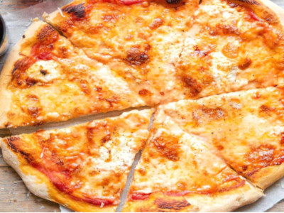
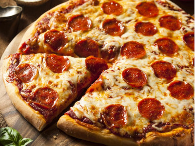
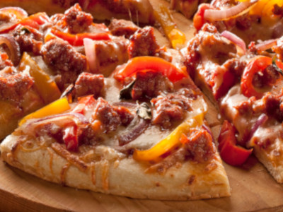
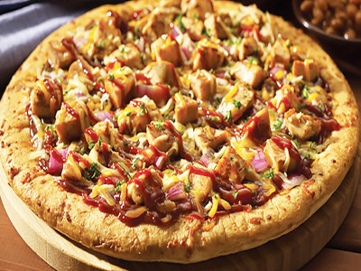
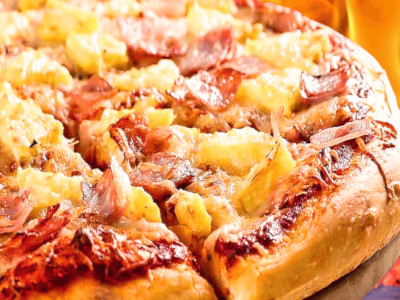
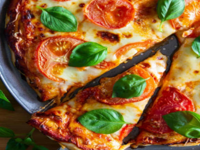

Our Menu
Cheese
"A classic cheese pizza is the ultimate crowd-pleaser. The delicious combination of crispy pizza crust, flavorful tomato sauce, and bubbly cheese make for an unbeatable combination. Even if you're a fan of unique toppings, it's hard to resist a slice of a plain cheese pie!"
Pepperoni
"The origin of pepperoni is an adaptation of other spicy sausage recipes, made with the ingredients that were available at the time in America. The first known mention of pepperoni occurred in 1919, in New York City. At this time, the topping began to appear in a number of Italian delis and pizzerias across Lower Manhattan."
Sausage
"Most pizzerias use Italian sausage, which is available everywhere and can be found in hot, sweet, or mild varieties. Sausage is usually made with ground pork and flavored with fennel, garlic, and red pepper, or sweet basil. It is also frequently made with chicken, and there are even vegetarian brands available."
BBQ Chicken
"Memphis BBQ Chicken pizza is like summer in a box. To create our Memphis BBQ Chicken pizza, we use only premium grilled chicken, crunchy fresh onions, and not one, not two, but three cheeses: mozzarella, provolone and cheddar on our hand-tossed crust. The result is a traditional summer cookout treat in one perfect pizza."
Hawaiian
"Bring a taste of that island life to pizza night with a classic Hawaiian-style pizza topped with tomato sauce, cheese, ham and pineapple. This sweet-and-salty, ultra-saucy, totally cheesy pizza is prepped in just 10 minutes with the help of Pillsbury™ classic pizza crust, and the whole pie is ready to eat in less than 30 minutes. Say "aloha!" to your new favorite five-ingredient meal."
Margherita
"Margherita pizza is a special variety of pizza that originates in Naples, Italy. In Italy, this pizza is a protected food, meaning that it must be prepared in a certain way to bear the "pizza Margherita" label, and the Italian government actually certifies bakeries that produce it. This pizza is very simple, placing an emphasis on fresh ..."